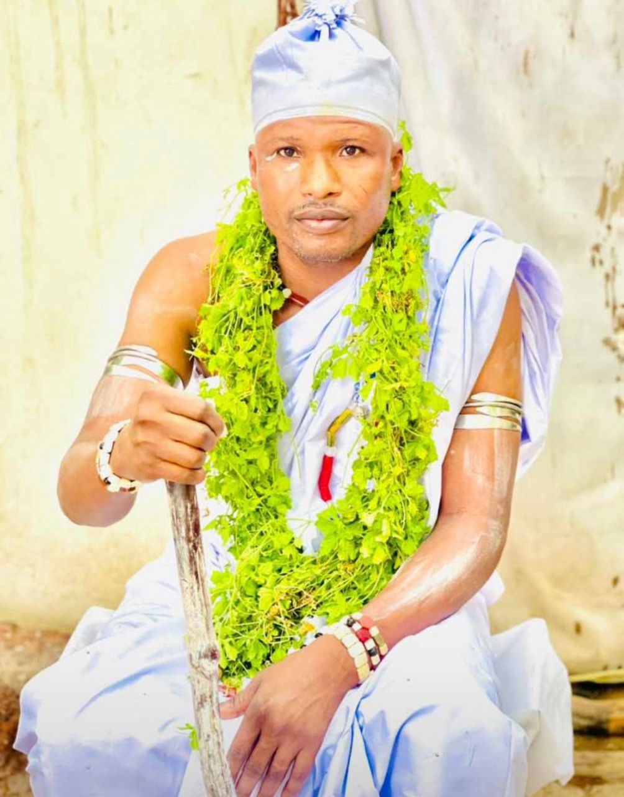
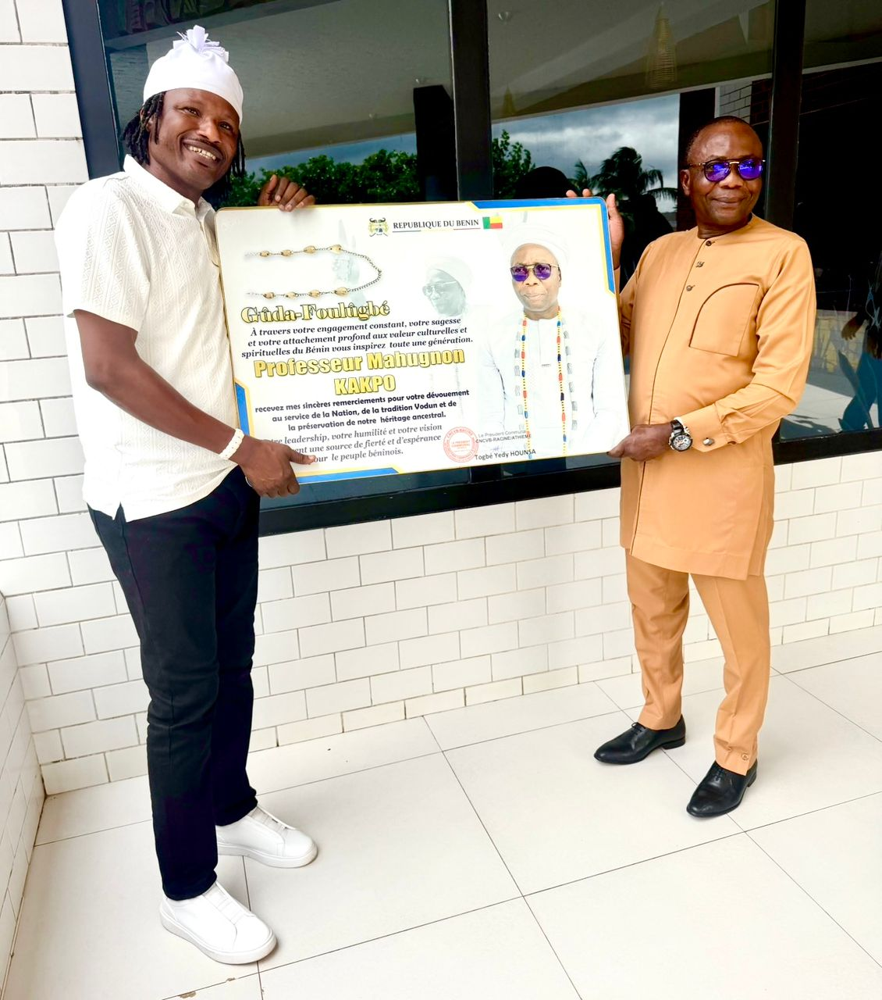
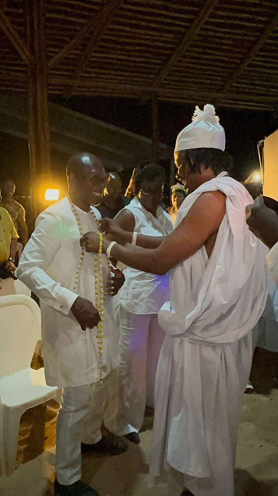
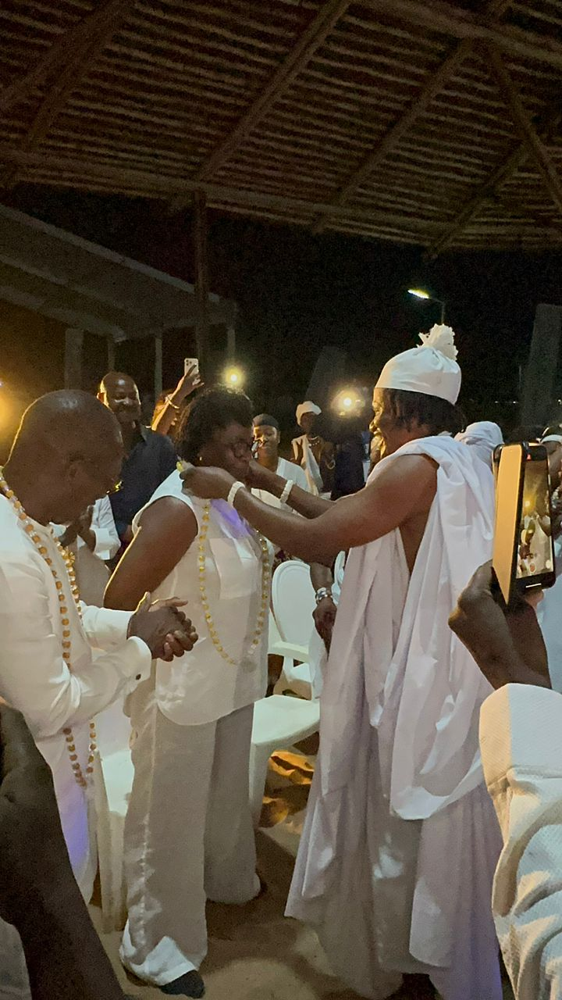

Patrice Hounsa — Hounnongan, Dignitaire du Culte Vodun
📜 Nommé par Décret Présidentiel N°2023-467 · Patrice Talon
Acteur des grands événements au Bénin
Ambassadeur de la paix
Initiateur du Grand Pèlerinage Agbandotho de Vodun Mami Dan
Gardien des traditions ancestrales, maître du couvent national Mami Dan.

🛡️ Togbé Yédy, Patrice Hounsa, est une figure majeure du Vodun béninois.
Dédié à Mami Dan, il dirige le CNCVB Racine à Athiémè et a été nommé au Comité des Rites Vodun par le Président Patrice Talon.
Reconnu comme Acteur des grands événements au Bénin et Ambassadeur de la paix, il est l'initiateur du Grand Pèlerinage Agbandotho de Vodun Mami Dan.
Il supervise la rénovation des couvents dans sept communes du Mono et du Couffo, et rayonne bien au-delà des frontières du Bénin.
🗓️ Jeudi 14 mai 2026 — Grand-Popo, Bénin
Le Professeur Mahougnon KAKPO a été honoré par Sa Majesté Togbé Yédy à travers la remise d'un tableau d'honneur en reconnaissance de son engagement pour la promotion et le rayonnement de la culture Vodun au Bénin.

Membre du Comité des rites vodun du Bénin et Président communal CNCVB-RACINE d'Athiémé, Togbé Yédy a salué les nombreuses actions menées par le Professeur KAKPO, 2ᵉ vice-président de l'Assemblée nationale, en faveur de la valorisation des traditions ancestrales et du repositionnement du Vodun sur la scène nationale et internationale.


🎬 Vidéo de la cérémonie de décoration
Sa Majesté Togbé Yédy est entrée dans l'histoire comme la toute première personnalité à avoir décoré Son Excellence Patrice Talon, Président de la République du Bénin, ainsi que son épouse. Cet acte solennel, chargé de symboles, consacre la reconnaissance du pouvoir traditionnel envers le premier magistrat de la nation et scelle l'alliance entre l'État et les cultes Vodun.
Lors des Vodun Days 2024, le Président Patrice Talon, accompagné des membres du gouvernement, a pris part aux cérémonies dans la salle des Vodun MAMI, sous la conduite de Sa Majesté Togbé Yédy, Maître du Couvent National Mami Dan. Un moment historique de communion entre le sommet de l'État et la spiritualité Vodun.
🎬 Vidéo des Vodun Days 2024 — Salle MAMI
🎬 Vidéo du Festival des Masques — Porto-Novo 2024
Sa Majesté Togbé Yédy a honoré de sa présence le Festival des Masques de Porto-Novo 2024, célébration emblématique des masques sacrés du Bénin. Aux côtés des communautés locales, il a apporté son expertise spirituelle et sa bénédiction, réaffirmant son rôle d'Acteur des grands événements et d'Ambassadeur de la paix.
Organisateur et maître du couvent national Mami Dan, cœur spirituel du festival international du Vodun.
Co-organisateur de la célébration des masques sacrés du Bénin.
Initiateur et organisateur du pèlerinage annuel dédié à Mami Dan.
Organisateur du festival des gardiens de la nuit.
Organisateur principal de la Journée Nationale du Vodun à Athiémé.
Par la grâce des divinités, Togbé Yédy accomplit guérisons et protections spirituelles reconnues à travers tout le Bénin.
Maladies chroniques
Désenvoûtement
Déblocage & chance
Couple & amour
Fertilité
Protection spirituelle
Bénin Top 10 Awards avec « Yin kô nam ».
Nommé par décret du Président Patrice Talon.
Leader de la Confédération Nationale du Vodun du Bénin.
Abonnés Facebook
Festivals organisés
Membres du Comité
Initiateur Grand Pèlerinage Agbandotho
🎬 Regardez et partagez
« La future génération doit comprendre que notre culture n'est pas un retard, mais une richesse. »
Un peuple qui oublie ses traditions perd son identité, mais un peuple qui protège sa culture construit un avenir solide pour ses enfants. Nos langues, nos rites, nos danses, nos valeurs et nos ancêtres sont des trésors que nous devons transmettre avec fierté.
La modernité ne doit pas effacer nos racines, elle doit les faire briller davantage. Valoriser notre culture aujourd'hui, c'est préparer une génération forte, consciente et respectée demain.